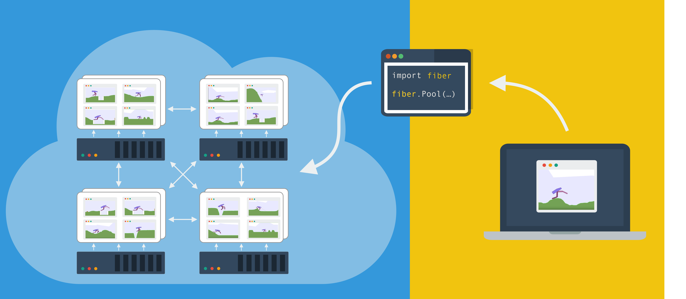
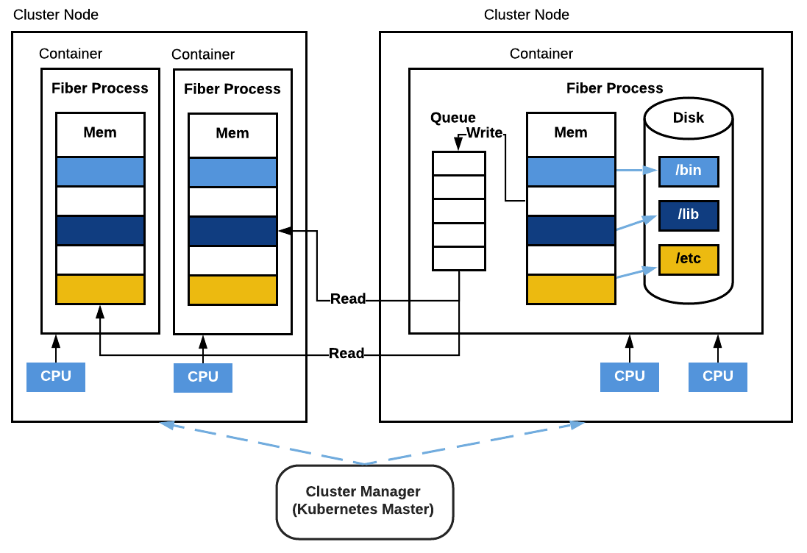
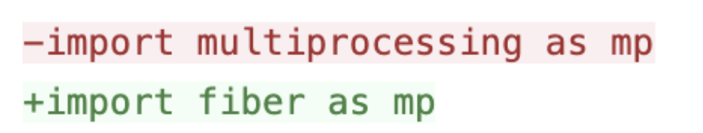
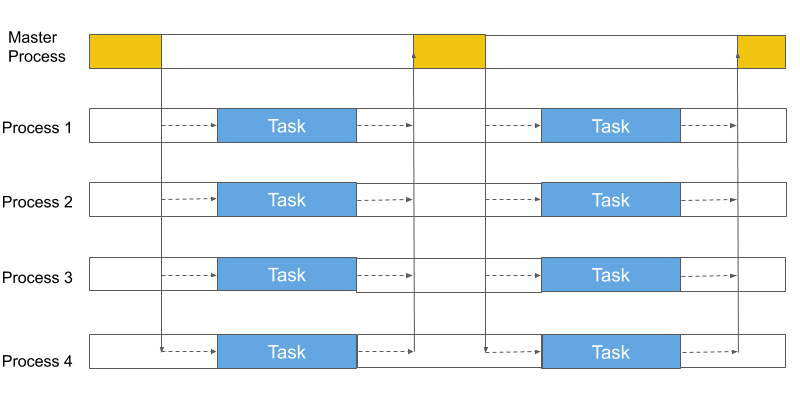

Introduction to Fiber
Distributed Computing for AI Made Simple
Jiale Zhi, Rui Wang, Jeff Clune and Kenneth O. Stanley

Fiber - Distributed Computing for AI Made Simple. Icon by Flat UI Kit.
Project Homepage: GitHub
Recent advances in machine learning are consistently enabled by increasing amounts of computation. More and more algorithms exploit parallelism and rely on distributed training for processing an enormous amount of data. Both the need for more data and more training impose great challenges on the software that manages and utilizes the large scale computational resource.
Within Uber, we've developed algorithms like POET, Go-Explore, GTN, etc., that leverage a large amount of computation. To enable future generations of large-scale computation for algorithms like these, we have developed a new system called Fiber that helps users scale what might otherwise be only local computation to hundreds or even thousands of machines with ease.
The challenge of large-scale distributed computation¶
In an ideal world, scaling an application that runs on one machine to an application that runs on a cluster of machines should be as easy as changing a command-line argument. However, that is not an easy task in the real world.
While working with many people who run large scale distributed computing jobs on a daily basis, we found that there are several reasons why it is so hard to harness distributed computing nowadays:
-
There is a huge gap between making code work locally on laptops or desktops and running code on a production cluster. You can make MPI work locally but it's a completely different process to run it on a computer cluster.
-
No dynamic scaling is available. If you launch a job that requires a large amount of resources, then most likely you'll need to wait until everything is allocated before you can run your job. This waiting to scale up makes it less efficient.
-
Error handling is missing. While running, some jobs may fail. And you may be put into a very nasty situation where you have to recover part of the result or discard the whole run.
-
High learning cost. Each system has different APIs and conventions for programming. To launch jobs with a new system, a user has to learn a set of completely new conventions before jobs can be launched.
The new Fiber platform addresses each of these issues explicitly, potentially opening up seamless large-scale distributed computing to a much wider population of users.
Introducing Fiber¶
Fiber is a Python-based distributed computing library for modern computer clusters. Instead of programming your desktop or laptop, now you can program the whole computer cluster. Originally, it was developed to power large scale parallel scientific computation projects like POET and it has been used to power similar projects within Uber. The key features of Fiber include:
-
Easy to use. Fiber allows you to write programs that run on a computer cluster without the need to dive into the details of the computer cluster.
-
Easy to learn. Fiber provides the same API as Python's standard multiprocessing library that people are familiar with. If you know how to use multiprocessing, you can program a computer cluster with Fiber.
-
Fast performance. Fiber's communication backbone is built on top of Nanomsg, which is a high-performance asynchronous messaging library to allow fast and reliable communication.
-
No need for deployment. You run Fiber application the same way as running a normal application on a computer cluster and Fiber handles the rest for you.
-
Reliable computation. Fiber has built-in error handling when you are running a pool of workers. Users can focus on writing the actual application code instead of dealing with crashed workers.
In addition, Fiber can be used together with other specialized frameworks in areas where performance is critical. Examples include distributed SGD where many existing frameworks like Horovod or torch.distributed have already provided very good solutions. Fiber can be used together with such platforms by using Fiber's Ring feature to help to set up a distributed training job on computer clusters.

Figure 1: Fiber overview. The diagram shows how Fiber works on a computer cluster. It starts many different job-backed-processes and runs different Fiber components and user processes inside them. Fiber Master is the main process that manages all the other processes. Some processes like Ring Node maintain communications between each member.
Fiber can (1) help users who are working on large-scale distributed computing to reduce the time to go from ideas to actually running distributed jobs on computation clusters, (2) shield users from details of configuration and resource allocation tasks, (3) enable faster debug cycles, and (4) simplify the transition from local to cluster development.
Architecture¶
Fiber bridges the classical multiprocessing API with a flexible selection of backends that can run on different cluster management systems. To achieve this integration, Fiber is split into three different layers: the API layer, backend layer and cluster layer. The API layer provides basic building blocks for Fiber like processes, queues, pools and managers. They have the same semantics as in multiprocessing, but are extended to work in distributed environments. The backend layer handles tasks like creating or terminating jobs on different cluster managers. When a new backend is added, all the other Fiber components (queues, pools, etc.) do not need to be changed. Finally, the cluster layer consists of different cluster managers. Although they are not a part of Fiber itself, they help Fiber to manage resources and keep track of different jobs, thereby reducing the number of items that Fiber needs to track. This overall architecture is summarized in figure 2.

Figure 2: Fiber architecture.
Job-Backed Process¶
Fiber introduces a new concept called job-backed processes (also called a Fiber process). It is similar to the process in Python's multiprocessing library, but more flexible: while a process in multiprocessing only runs on a local machine, a Fiber process can run remotely on a different machine or locally on the same machine. When starting a new Fiber process, Fiber creates a new job with the proper Fiber backend on the current computer cluster.

Figure 3: Job-backed processes. Each job-backed process is a containerized job running on the computer cluster. Each job-backed process will also have its own allocation of CPU, GPU and other types of resources. The code that runs inside the container is self-contained.
Fiber uses containers to encapsulate the running environment of current processes, including all the required files, input data, other dependent program packages, etc., to ensure everything is self-contained. All the child processes are started with the same container image as the parent process to guarantee a consistent running environment. Because each process is a cluster job, its life cycle is the same as any job on the cluster. To make it easy for users, Fiber is designed to directly interact with computer cluster managers. Because of this, Fiber doesn't need to be set up on multiple machines or bootstrapped by any other mechanisms, unlike Spark or IPyParallel. It only needs to be installed on a single machine as a normal Python pip package.
Components¶
Fiber implements most multiprocessing APIs on top of Fiber processes including pipes, queues, pools, and managers.
Queues and pipes in Fiber behave the same as in multiprocessing. The difference is that queues and pipes are now shared by multiple processes running on different machines. Two processes can read from and write to the same pipe. Furthermore, queues can be shared among many processes on different machines and each process can send to or receive from the same queue at the same time. Fiber's queue is implemented with Nanomsg, a high-performance asynchronous message queue system.

Figure 4: Fiber Queue. This diagram shows a Fiber queue shared across three different Fiber processes. One Fiber process is located on the same machine as the queue and the other two processes are located on another machine. One process is writing to the queue and the other two are reading from the queue.
Pools are also supported by Fiber. They allow the user to manage a pool of worker processes. Fiber extends pools with job-backed processes so that it can manage thousands of (remote) workers per pool. Users can also create multiple pools at the same time.

Figure 5: Fiber Pool. A pool with 3 workers is shown. Two of them are located on one machine and the other is located on a different machine. They collectively work on tasks that are submitted to the task queue in the master process and send results to the result queue.
Managers and proxy objects enable Fiber to support shared storage, which is critical to distributed systems. Usually, this function is handled by external storage like Cassandra, Redis, etc. on a computer cluster. Fiber instead provides built-in in-memory storage for applications to use. The interface is the same as multiprocessing's Manager type.
Rings are an extension to the multiprocessing API that can be helpful
in distributed computing settings. A ring in Fiber stands for a group of
processes who work collectively together as relative equals. Unlike
Pool, Ring does not have the concept of a master process and
worker processes. All the members inside the Ring share about the
same responsibility. Fiber's Ring models a topology that is very common
in machine learning when doing distributed
SGD.
Examples include
torch.distributed,
Horovod, etc. Generally it is very
challenging to start this kind of workload on a computer cluster; Fiber
provides the Ring feature to help setting up such a topology.

Figure 6: Fiber Ring. A Fiber Ring with 4 nodes is depicted. Ring node 0 and ring node 3 run on the same machine but in two different containers. Ring nodes 1 and 2 both run on a separate machine. All these processes collectively run a copy of the same function and communicate with each other during the run.
Applications¶
Powering new applications¶
Here, we show an example of how Fiber can be applied to enable large-scale distributed computation. This example is a demo of a reinforcement learning (RL) algorithm. The communication pattern for distributed RL usually involves sending different types of data between machines: actions, neural network parameters, gradients, per-step/episode observations, rewards, etc.
Fiber implements pipes and pools to transmit this data. Under the hood, pools are normal Unix sockets, providing near line-speed communication for the applications using Fiber. Modern computer networking usually has bandwidth as high as hundreds of gigabits per second. Transmitting smaller amounts of data over a network is generally fast.
Additionally, the inter-process communication latency does not increase much if there are many different processes sending data to one process because data transfer can happen in parallel. This fact makes Fiber's pools suitable for providing the foundation of many RL algorithms because simulators can run in each pool worker process and the results can be transmitted back in parallel.
# fiber.BaseManager is a manager that runs remotely class RemoteEnvManager(fiber.managers.AsyncManager): pass class Env(gym.env): # gym env pass RemoteEnvManager.register('Env', Env) def build_model(): # create a new policy model return model def update_model(model, observations): # update model with observed data return new_model def train(): model = build_model() manager = RemoteEnvManager() num_envs = 10 envs = [manager.Env() for i in range(num_envs)] handles = [envs[i].reset() for i in num_envs] obs = [handle.get() for handle in handles] for i in range(1000): actions = model(obs) handles = [env.step() for action in actions] obs = [handle.get() for handle in handles] model = update_model(model, obs)
Code Example 1: Simplified RL code implemented with Fiber
Enabling existing multiprocessing applications¶
Because multiprocessing is widely used in the Python world, Fiber opens up broad opportunities for such applications because now they can run in a distributed setup on a computer cluster like Kubernetes only by changing a few lines of code!
Here is an example: OpenAI Baselines is a very popular library for people doing RL and it has many reference algorithms like DQN, PPO, etc. Its downside is that it only works on a single machine. If you want to train PPO on a large scale, you have to create your own MPI-based setup and manually set up the cluster to hook everything up.
In contrast, with Fiber things are much easier. It can seamlessly expand RL algorithms like PPO to leverage hundreds of distributed environment workers. Fiber provides the same API as multiprocessing, which is what OpenAI Baselines uses to harvest multicore CPU processing power locally. So the change needed to make OpenAI Baselines to work with Fiber is just one line:

And then you can run OpenAI Baselines on Kubernetes! We have provided a full guide for how to make the change and run Baselines on Kubernetes here.
Error Handling¶
Fiber implements pool-based error handling. When a new pool is created, an associated task queue, result queue, and pending table are also created. Newly-created tasks are then added to the task queue, which is shared between the master process and worker processes. Each of the workers fetches a single task from the task queue, and then runs task functions within that task. Each time a task is removed from the task queue, an entry in the pending table is added. Once the worker finishes that task, it puts its results in the result queue. The entry associated with that task is then removed from the pending table.


Figure 7: Fiber Error Handling. On the left is a normal Fiber Pool with 4 workers. On the right, worker 3 fails and a new worker process (worker 5) is consequently started and ready to be added to the pool.
If a pool worker process fails in the middle of processing, that failure is detected by the parent pool that serves as the process manager of all the worker processes. Then the parent pool puts the pending task from the pending table back into the task queue if the previously failed process has a pending task. Next, it starts a new worker process to replace the previously failed process and binds the newly-created worker process to the task queue and the result queue.
Performance¶
One of the most important applications of Fiber is to scale the computation of algorithms like RL and population-based methods like ES. In these applications, latency is critical. RL and population-based methods are typically applied in a setup that requires frequent interaction with simulators to evaluate policies and collect experiences, such as ALE, Gym, and Mujoco. The latency introduced from getting the results from the simulators critically impacts the overall training performance. In these tests, we evaluate the performance of Fiber and compare it with other frameworks. We also add Ray in our framework overhead test to provide some preliminary results, detailed results are expected to be added in the future.
There are generally two ways to reduce such latency. Either we can reduce the amount of data that needs to be transferred or make the communication channel between different processes faster. For the purpose of fast communication, Fiber implements pipes and pools with Nanomsg, providing fast communication for the applications using Fiber. In addition, people can choose even higher performance with libraries like speedus.
Framework overhead¶
The test in this section probes how much overhead the framework adds to the workload. We compare Fiber, Python multiprocessing library, Spark, and IPyParallel. The testing procedure is to create a batch of workloads that takes a fixed amount of time in total to finish. The duration of each single task ranges from 1 second to 1 millisecond. We run five workers for each framework locally and adjust the batch size to make sure the total finish time for each framework is roughly 1 second (i.e. for 1 millisecond duration, we run 5,000 tasks). The hypothesis is that Fiber should have similar performance to multiprocessing because both of them don't reply on complex scheduling mechanisms. However, Spark and IPyParallel should be slower than Fiber because they rely on schedulers in the middle.

Figure 8: Test Framework Overhead.
Fiber shows almost no difference when task durations are 100ms or greater, and is much closer to multiplrocessing than the other frameworks as the task duration drops to 10 or 1ms.
We use multiprocessing as a reference because it is very lightweight and does not implement any additional features beyond creating new processes and running tasks in parallel. Additionally, it exploits communication mechanisms only available locally (e.g. shared memory, Unix domain sockets, etc.), making it difficult to be surpassed by other frameworks that support distributed resource management across multiple machines and which cannot exploit similar mechanisms. It thus serves as a good reference on the performance that can be expected.

Figure 9: Different frameworks compared on mean time to finish a batch of tasks with different task durations (linear scale). The optimal finishing time is 1 second.
Compared to Fiber, IPyParallel and Spark fall well behind at each task duration. When the task duration is 1 millisecond, IPyParallel takes almost 24 times longer than Fiber, and Spark takes 38 times longer. This result highlights that both IPyParallel and Spark introduce considerable overhead when the task duration is short, and are not as suitable as Fiber for RL and population-based methods, where a simulator is used and the response time is a couple of milliseconds. We also show that Ray takes about 2.5x times longer than Fiber when running 1ms tasks.
Distributed task test¶
To probe the scalability and efficiency of Fiber, we compare it here exclusively with IPyParallel because Spark is slower than IPyParallel as shown above, and multiprocessing does not scale beyond one machine. We evaluate both frameworks on the time it takes to run 50 iterations of ES (evolution strategies) to test the scalability and efficiency of both frameworks.
With the same workload, we expect Fiber to finish faster because it has much less overhead than IPyParallel as shown in the previous test. For both Fiber and IPyParallel, the population size of 2,048, so that the total computation is fixed regardless of the number of workers. The same shared noise table trick is also implemented in both. Every 8 workers share one noise table.The experimental domain in this work is a modified version of the "Bipedal Walker Hardcore" environment of the OpenAI Gym with modifications described in here.

Figure 10: 50 Iterations of ES. Fiber scales better than IPyParallel when running ES with different number of workers. Each worker runs on a single CPU.
The main result is that Fiber scales much better than IPyParallel and finishes each test significantly faster. The length of time it takes for Fiber to run gradually decreases with the increase of the number of workers from 32 to 1,024. In contrast, the time for IPyParallel to finish increases from 256 to 512 workers. IPyParallel does not finish the run with 1,024 workers due to communication errors between its processes. This failure undermines the ability for IPyParallel to run large-scale parallel computation. After 512, we saw diminishing returns for Fiber when the number of workers increased. This is because of Amdahl's law. In that case, how fast the master process can process data becomes the bottleneck.
Overall, Fiber's performance exceeds IPyParallel for all numbers of workers tested. Additionally, unlike IPyParallel, Fiber also finishes the run with 1,024 workers. This result highlights Fiber's better scalability compared to IPyParallel even while it is at the same time very easy to use and set up.
Conclusion¶
Fiber is a new Python distributed library that is now open-sourced. It is designed to enable users to implement large scale computation easily on a computer cluster. The experiments here highlight that Fiber achieves many goals, including efficiently leveraging a large amount of heterogeneous computing hardware, dynamically scaling algorithms to improve resource usage efficiency, and reducing the engineering burden required to make complex algorithms work on computer clusters.
We hope that Fiber will further enable progress in solving hard problems by making it easier to develop methods and run them at the scale necessary to truly see them shine. For more details, please checkout out our Fiber GitHub repository and Fiber paper.